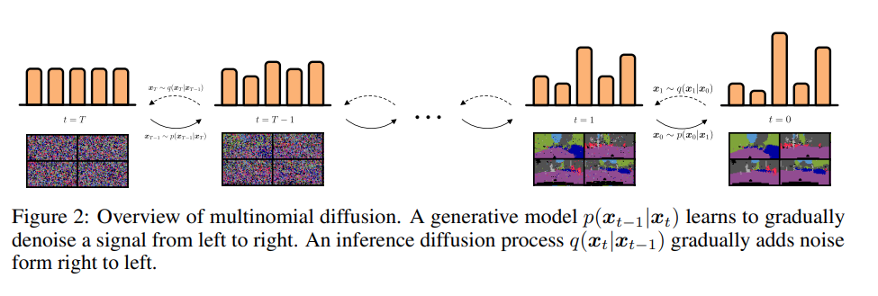

No Confusion Discrete Diffusion
AI was used for research and to do tedious things like generate LaTeX and format references. I manually checked everything.
Motivation
Diffusion models (and variants) are state-of-the-art for image, audio, and video generation but not for large language modeling which is dominated by autoregressive transformers. Why? Partly because diffusion models were designed for continuous data (e.g. pixel intensities) while language is discrete (tokens).
In this blog post, I do a brief (but incomplete) high level review of approaches for discrete diffusion applied to LLMs. I cover some diffusion basics in a previous post which may be useful.
Why model text with diffusion?
Parallel generation
Unlike autoregressive models that generate tokens sequentially, diffusion models predict all tokens in a given block simultaneously and therefore may be able to better leverage GPUs. See Seed Diffusion for a recent example.Iterative Refinement
Diffusion models start with noise, make a prediction, and then repeatedly refine that prediction. This allows the model to correct mistakes.Better Editing / Inpainting
It’s hard (or at least unnatural) to do fill in the blank or editing in the middle of a document using autoregressive techniques. For certain diffusion techniques, this can come for free.
What should the forward process be?
To apply the diffusion modeling framework to a discrete variable, you need to first figure out what your forward process should be that turns your clean data into noise. For a continuous process, adding Gaussian noise seems like a natural way to go from data to noise but what should be the forward noising process for categorical variables?
In short, it’s the process that takes data (denoted as \(x_0\) at \(t=0\)) to noise (\(x_T\) at \(t=T\)) where \(T\) is the final step in the process. How this process is defined is important because it determines the reverse process (noise to data) that your model will need to learn. Following the lead of the DD3PM paper (Austin et al.), let’s go through some high level math. Mathematically, a Markov forward process can be defined as:
\[ q(x_t | x_{t-1}) = \text{Cat}(x_t; p=x_{t-1}Q_t) \]
\(Q_t\) is a standard Markov transition matrix that defines how likely it is for \(x_{t-1}\) to transition from one state to another. If we do some algebra (see Austin et al.), we can derive formulas that can be used in the standard diffusion loss:
\[ q(x_t | x_0) = \text{Cat}(x_t; p=x_0\overline{Q}_t), \quad \text{with } \overline{Q}_t = Q_1 Q_2 \dots Q_t \tag{1}\]
Equation 1 gives us the ability to calculate the distribution for any timestep given an initial data point which is useful below.
\[ q(x_{t-1} | x_t, x_0) = \frac{q(x_t | x_{t-1}, x_0) q(x_{t-1} | x_0)}{q(x_t | x_0)} = \text{Cat}\left(x_{t-1}; p = \frac{x_t Q_t^{\top} \odot x_0 \overline{Q}_{t-1}}{x_0 \overline{Q}_t x_t^{\top}}\right) \tag{2}\]
Equation 2 can be directly used in the standard diffusion loss.
You might notice that the matrix \(\overline{Q}_t\) is required in the formulas above. If the vocabulary size (\(V\)) is large (\(V>100k\) for many modern LLMs), computing or storing this \(V \times V\) matrix is prohibitively expensive. This motivates the need to pick our transition distribution carefully so that we can compute our diffusion loss without actually doing a bunch of expensive matrix multiplications (or even materializing \(Q\)). We’ll come back to this later.
Idea 1: Let’s avoid this question and turn discrete variables into continuous ones
A simple version of this idea is to embed your vocabulary (think word embeddings) in a continuous space, do diffusion, apply a softmax to the output of the diffusion, and finally apply an argmax (Li et al.).
Another variation is to do a “relaxation” of the bits (e.g. category id=5 is converted to binary 1001 and then to continuous values 1.0,-1.0,-1.0,1.0), do diffusion, and then round back to the nearest discrete neighbor (Chen et al.). Of course, there are (many) more complex ways to map discrete data to the continuous domain and then do diffusion on that “latent” representation but I won’t cover them here.
Some issues are:
- This is hacky and unprincipled
- Quantization necessarily introduces reconstruction errors
- As of writing, none of these approaches appear to have demonstrated truly exceptional results for LLMs; however, the state of the art appears to change daily.
Idea 2: Diffuse towards a uniform distribution
A natural idea is to define the forward noising process as one that adds a little uniform noise at each step. In Hoogeboom et al.’s paper they define the forward process as
\[ q(x_t \mid x_{t-1}) = \mathrm{Cat}\!\left( x_t \;\middle|\; (1 - \beta_t)\,x_{t-1} + \frac{\beta_t}{K}\,\mathbf{1} \right) \]
Here \(K\) is the vocab size and \(\frac{\beta_t}{K}\,\mathbf{1}\) is uniform noise. Intuitively, this equation is saying at each step, resample your \(x\) vector (this is a one-hot vector) from a categorical distribution where with some probability you stay the same \((1 - \beta_t)\) and with probability \(\beta_t\) you sample uniformly from other tokens. \(\beta_t\) initially is 0 so that it’s highly likely that \(x_t\) stays the same between steps but as the diffusion process progresses \(\beta_t\) increases and it becomes increasingly likely that \(x_t\) transitions to another token.
Suppose your vocab consists of three words: dog, cat, pony.
We’ll run the forward process for 7 steps starting from cat. A possible trajectory might be:
cat → cat → cat → dog → dog → pony → cat → dog
Initially, the current word (\(x_{t-1}\)) is unlikely to change, but as diffusion progresses it becomes more likely to switch.
The reverse process learned by a model might look like:
pony → dog → cat → dog → cat → cat → cat → cat
At each step, the model samples from a categorical distribution over vocabulary tokens.

While Hoogeboom was the first paper to explore this approach for LLMs, their results were mediocre. In 2023, Austin et al. in their D3PM paper, explored several other types of forward processes and found that uniform performs worse than a simpler masking forward process.
Technically, the math above applies only to a single categorical variable. This isn’t very useful for LLMs where we want to generate text of arbitrary length. This is not a problem because we can factorize our forward process to diffuse each token independently towards noise (i.e. we just diffuse each token as if it were its own categorical variable). The reverse process is also not an issue. We can take in the full block of noisy tokens (\(\mathbf{x}_t\)) and use a bidirectional transformer as the mask predictor (\(\mathbf{p}_\theta(\mathbf{x}_0 | \mathbf{x}_t)\)) to predict all masked tokens in parallel. See Shi et al. for more information.
Now a block of tokens is closer to what we want but it’s still not good enough. We want to generate arbitrary length text not just fixed size blocks. To do this, we can generate sequences of blocks where blocks are conditioned on the final outputs of previous blocks. Consequently, the model’s generation process retains an autoregressive dependency across the blocks.
Idea 3: Introduce an absorbing masking token
Another idea is to add a special token called an absorbing mask token. Now instead of diffusing towards a uniform distribution, we diffuse towards a delta distribution of only mask tokens. In other words, regardless of what token we start at, we always end at a mask token. Furthermore, if our forward process ever transitions to a mask token, we stay there. Intuitively, this is kind of like flipping a biased coin repeatedly until you get heads. Once you get heads, you switch to the mask state and stay there.
It’s worth noting that during the reverse process, once a token is no longer masked, it does not change. This is a key limitation since it means that the model could unmask conflicting tokens at the same timestep and also that the model cannot “iteratively” refine its output. That said, Shi et al. and Sahoo et al. both evaluate masked absorbing diffusion against other diffusion variants and autoregressive models. They find that masked diffusion outperforms other diffusion methods and is only slightly worse than an autoregressive approach.
Again, suppose your vocab consists of three words: dog, cat, pony.
We’ll run the forward process for 7 steps starting from cat. A possible trajectory might look like:
cat → cat → cat → cat → mask → mask → mask → mask
Notice that cat never changes to a different word.
Similarly, the learned reverse process might sample:
mask → mask → mask → cat → cat → cat → cat
Once cat is unmasked, it cannot move to a different token.
Idea 4: Add a masking token but let the model correct its mistakes
This is idea 3 plus an improved generation process. Namely, during inference we pick low confidence tokens and remask them. Training does not change. This idea was introduced in early 2025 by Wang et al. (ReMDM) where they investigate several strategies for deciding how and when to remask tokens during generation. These ideas were scaled up a few months later using an 8 billion parameter model by Nie et al.(Large Language Diffusion Models aka. LLADA). They demonstrate SoTA peformance on a number of language and reasoning tasks thus showing that discrete diffusion models can indeed rival autoregressive models.
The title of the paper that introduced this idea says most of it: The Reversal Curse: LLMs trained on “A is B” fail to learn “B is A”.
From the paper: > “Who is Tom Cruise’s mother? [A: Mary Lee Pfeiffer]”
> and the reverse “Who is Mary Lee Pfeiffer’s son?”.
> GPT-4 correctly answers questions like the former 79% of the time, compared to 33% for the latter.
This “curse” may be due to the autoregressive nature of most LLMs. In Nie et al. they show that LLADA breaks this “curse” and has consistent performance on both forward and backward reasoning tasks.
Wrapping it all up
Discrete diffusion is becoming competitive with standard autoregressive LLMs. In particular, absorbing masking diffusion with remasking during sampling appears to be the most promising. More generally, discrete diffusion offers potential improvements in terms of speed and editing flexibility while potentially improving quality via iterative refinement and avoiding the “reversal curse”.
Further reading
I glossed over a number of important topics. Further reading might include:
- details on noise schedules and training targets
- score based approaches to discrete diffusion such as this
- self conditioning
- other forward processes and auxiliary losses based on edit distance
References
- Li, X. L. (2022). Diffusion-LM Improves Controllable Text Generation. arXiv:2205.14217
- Chen, T., Zhang, R., & Hinton, G. E. (2022). Analog Bits: Generating Discrete Data using Diffusion Models with Self-Conditioning. arXiv:2208.04202
- Hoogeboom, E., Nielsen, D., Jaini, P., Forré, P., & Welling, M. (2021). Argmax Flows and Multinomial Diffusion: Learning Categorical Distributions. arXiv:2102.05379
- Austin, J., Johnson, D. D., Ho, J., Tarlow, D., & van den Berg, R. (2021). Structured Denoising Diffusion Models in Discrete State-Spaces. arXiv:2107.03006
- Shi, J., Han, K., Wang, Z., Doucet, A., & Titsias, M. K. (2024). Simplified and Generalized Masked Diffusion for Discrete Data. arXiv:2406.04329
- Sahoo, S., Arriola, M., Schiff, Y., Gokaslan, A., Marroquin, E., Chiu, J. T., Rush, A. M., & Kuleshov, V. (2024). Simple and Effective Masked Diffusion Language Models. arXiv:2406.07524
- Wang, G., Schiff, Y., Sahoo, S., & Kuleshov, V. (2025). Remasking Discrete Diffusion Models with Inference-Time Scaling. arXiv:2503.00307
- Nie, S., Zhu, F., You, Z., Zhang, X., Ou, J., Hu, J., Zhou, J., Lin, Y., Wen, J.-R., & Li, C. (2025). Large Language Diffusion Models. arXiv:2502.09992
- Berglund, L. (2023). The Reversal Curse: LLMs trained on “A is B” fail to learn “B is A”. arXiv:2309.12288
- Song, Y., Zhang, Z., et al. (2025). Seed Diffusion: A Large-Scale Diffusion Language Model with High-Speed Inference. arXiv:2508.02193